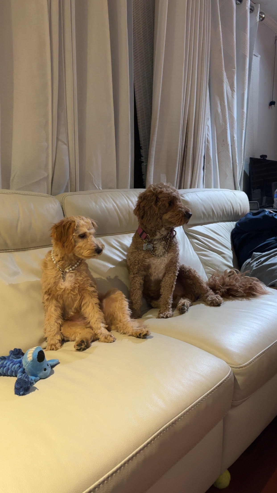
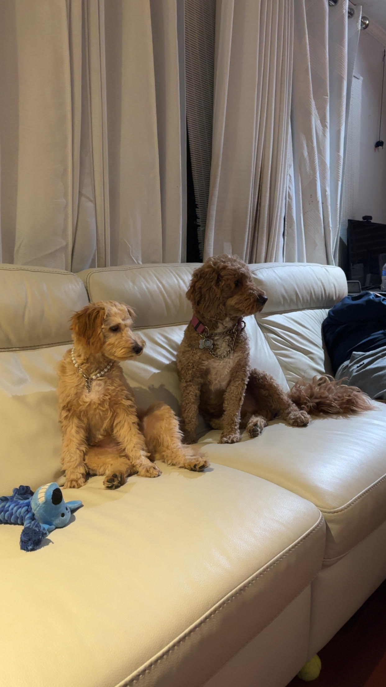

About Me
Hi my name is Joseph Vito and this is my website.
I'm currently participating in Worcester Polytechnic Institute's Frontier II program; majoring in Computer Science and with a minor of Business: Entrepeneurship I am from Port Chester, New York, however attend Brunswick School in Connecticut. Brunswick is amazing, offering various sports at a high level. I play soccer and squash at Brunswick.
In school, my favorite subject is Mathematics. I'm a rising 10th grader, and was offered a spot in AP Computer Science Principles, despite not meeting the prerequisite of enrolling into an Intro to CS. Therefore, I took this class not only to be ahead, but to explore different opportunities and interests.
I would consider my greatest strenghts to be my patience, my ability to perform no matter the circumstance, and being a good, trustworthy listener to those who need it.
Below are the classes i've taken, and will take next year.
| 9th Grade | 10th Grade |
|---|---|
| Honors Biology | Honors Chemistry |
| English IX | English X |
| Modern World History | United States History |
| Italian I | Honors Italian II |
| Honors Geometry | Honors Algebra II with Trigonometry |
| Band I | Honors MOB |
| Free Period | AP Computer Science Principles |
| N/A : Gained extra free period with MOB | AP English Language : Spring Semester |
Below are things I love.

 
